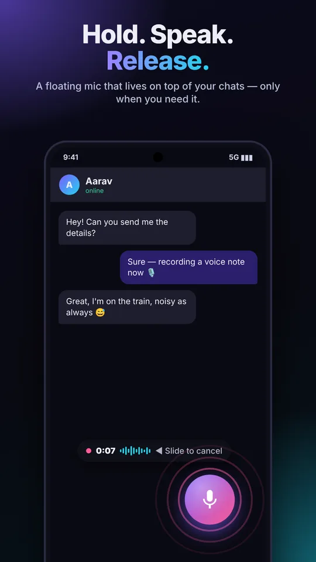
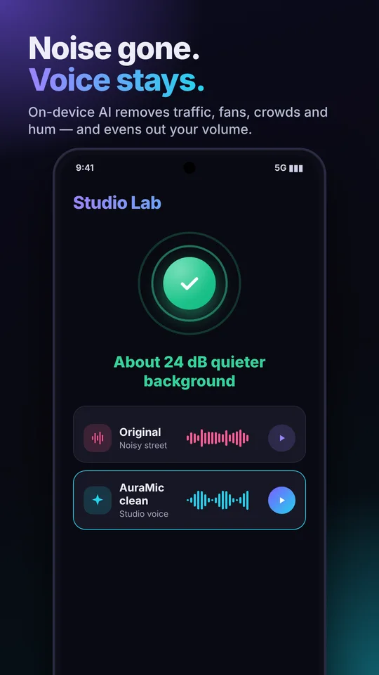
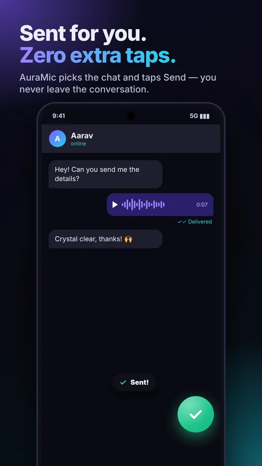
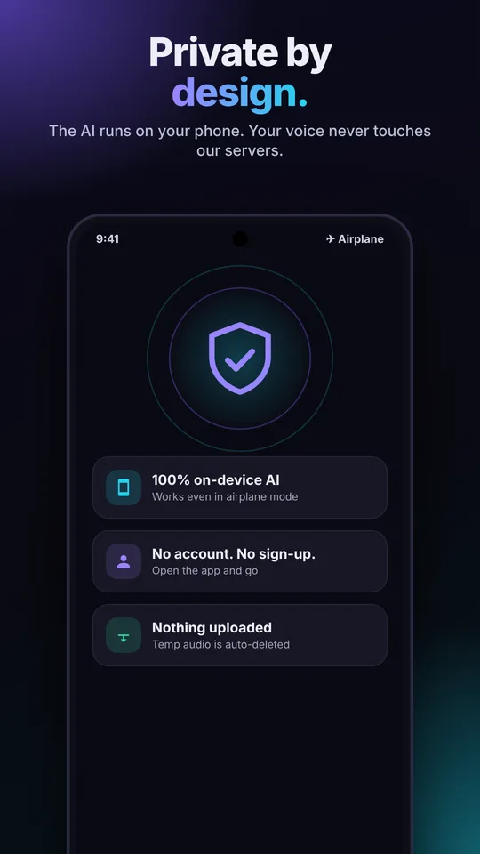
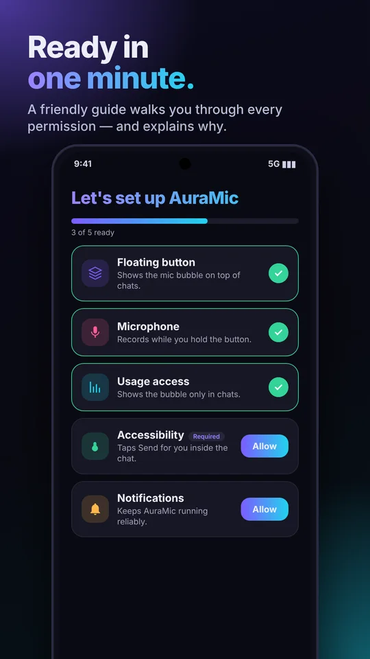
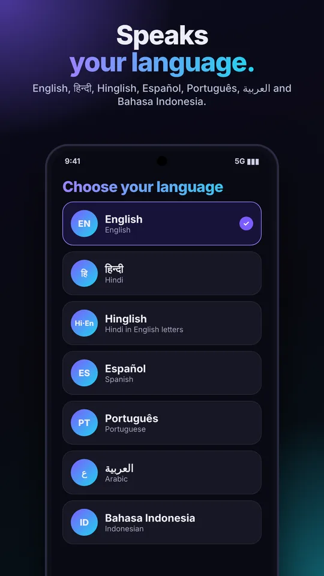
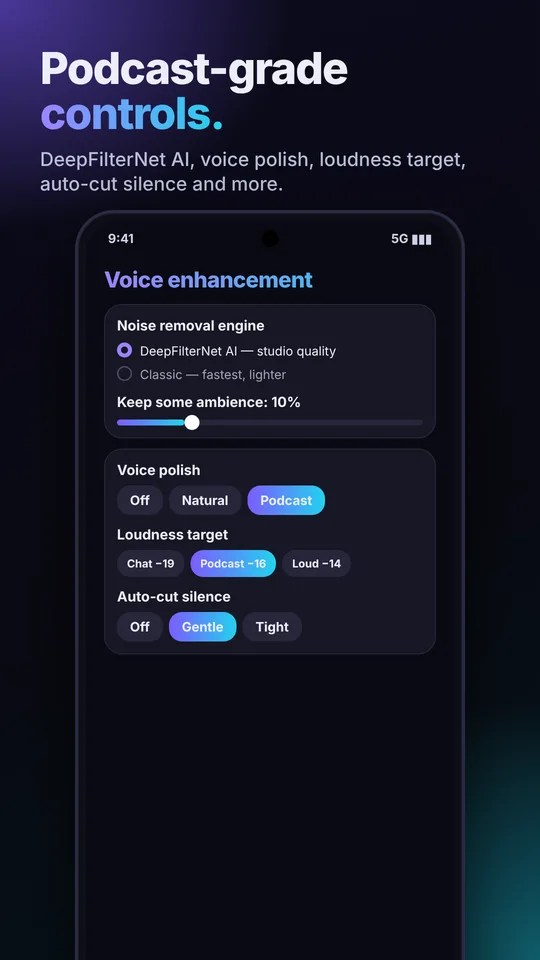
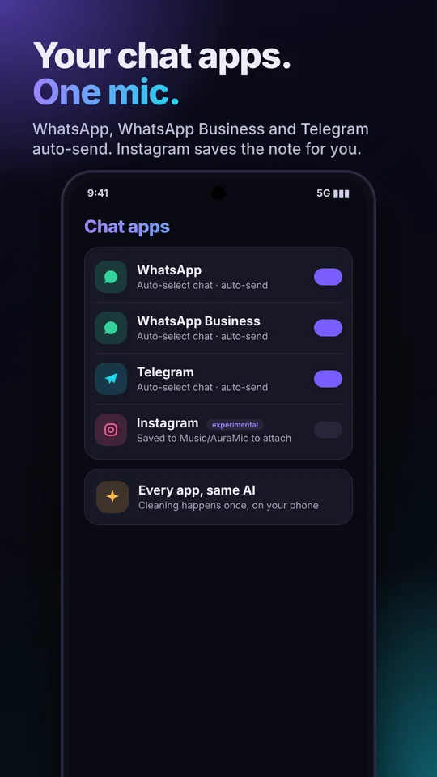

DeepFilterNet3 studio AI
Full-band 48 kHz neural speech enhancement runs on your phone via ONNX Runtime: traffic, fans, crowds, keyboards and hum disappear; your voice stays natural.
100% on-device AI
A floating mic on top of your chat apps. Hold it, speak, let go — DeepFilterNet AI removes the background and your voice note is sent automatically, with podcast-grade polish.
Why AuraMic AI
Full-band 48 kHz neural speech enhancement runs on your phone via ONNX Runtime: traffic, fans, crowds, keyboards and hum disappear; your voice stays natural.
Everything runs on your phone — no cloud, no account, no upload. Works in airplane mode.
A floating mic on top of WhatsApp. One gesture records, cleans and sends. Slide left to cancel.
AuraMic opens the share sheet, picks the same chat and taps Send for you. Prefer manual? Turn it off.
EQ, de-esser and gentle compression, then loudness mastering to −16 LUFS (BS.1770) with a look-ahead limiter. Presets: Off, Natural, Podcast.
Shorten long pauses and trim the start and end. Gentle or Tight, applied to the cleaned signal so cuts are clean.
Hear the voice and the removed noise as separate takes, or mix a little ambience back for a natural feel.
Pick the chat apps you use. WhatsApp, WhatsApp Business and Telegram auto-send; Instagram saves the note for you to attach (experimental).
English, हिन्दी, Hinglish, Español, Português, العربية and Bahasa Indonesia — switch any time, instantly.
How it works
Open any conversation in WhatsApp, WhatsApp Business, Telegram or Instagram. The floating mic appears; it hides when you leave.
Press and hold the mic. Watch the live waveform and timer. Slide left to cancel.
AuraMic cleans the audio on-device, picks the same chat, and taps Send. Done in seconds.
Illustration of the effect: steady background noise is pulled down while speech peaks stay. Open Studio Lab in the app to try it with your own voice.
AI runs on your phone. No audio ever reaches a server.
Accessibility is limited to WhatsApp and used only to tap Send.
Open the app, finish the guided setup, and go.
Foreground checks pause when the screen is off.
Screenshots








FAQ
No. Recording, noise removal and encoding all happen on your phone. We have no servers that receive your audio, messages or contacts. See the Privacy Policy.
WhatsApp and WhatsApp Business (auto-select chat + auto-send), Telegram (same flow, using on-screen text matching) and Instagram (experimental: Instagram does not accept audio files from other apps, so the cleaned note is saved to Music/AuraMic for you to attach). Turn apps on or off in Settings.
AuraMic uses DeepFilterNet3, a state-of-the-art real-time denoiser that keeps your actual voice and removes everything else, then adds EQ, compression and loudness mastering. Generative tools that re-synthesise speech can sound even more “studio” on very poor recordings, but they need the cloud; AuraMic stays 100% on your phone.
To select the chat you were in and tap the chat app's own Send button after your voice note is ready — nothing else. It only works inside the chat apps you enable and never reads or stores your messages. Read the Accessibility Disclaimer.
Android's Usage access lets AuraMic know which app is in front, so the floating mic shows only in WhatsApp and disappears everywhere else.
If you installed the APK outside the Play Store, Android 13+ may grey it out. Open Settings → Apps → AuraMic → ⋮ → “Allow restricted settings”, then enable the service.
Steady noise: traffic, fans, AC, hum, wind, engines. Very loud or voice-like noise (a packed crowd) is reduced but not eliminated. Try the in-app Studio Lab to hear it with your own recording.
Some phones (Xiaomi, Oppo, Vivo, Samsung…) put background apps to sleep. Set AuraMic's battery usage to Unrestricted — the app's setup screen has a shortcut.
No. AuraMic AI is an independent app by FireClash Pro. WhatsApp is a trademark of WhatsApp LLC.
See the Google Play listing for current pricing. No account is ever required.
Bug, idea, or something not working on your phone? Tell us the phone model, Android version and what happened.
support@fireclashpro.com